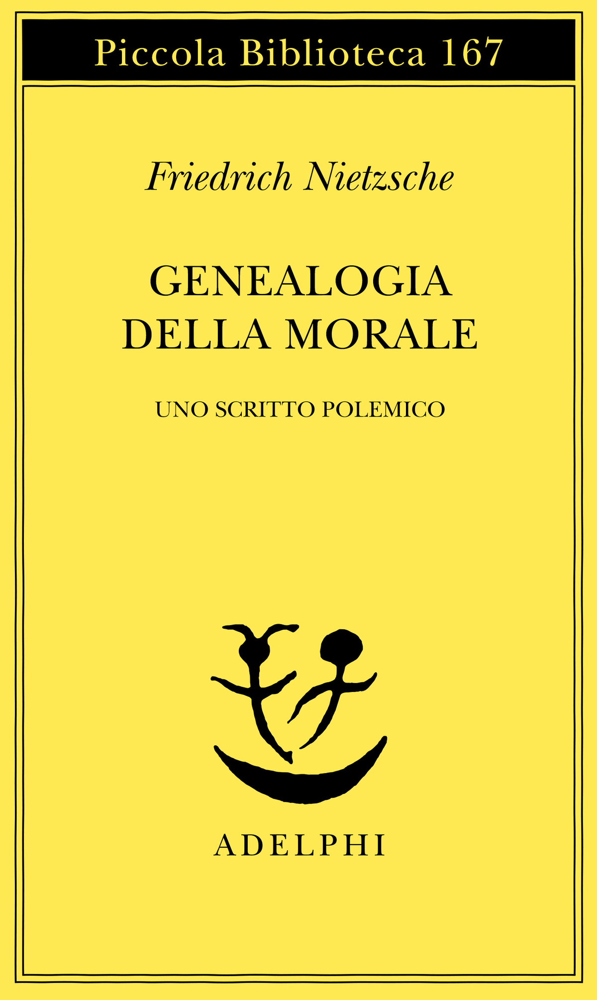

18:10 · 4 OPERE
Memoria e dolore.
Il filo del discorso
Memoria e dolore sono affrontati come dimensioni intrecciate della vita umana. Dr Divago parte da Nietzsche e da Eschilo per interrogare la possibilità dell’oblio, poi descrive il ricordo come apertura a verità che non si lasciano ridurre a definizioni. La riflessione passa dalla memoria personale alla sua forza di resistenza contro la manipolazione del passato. Poeti e scrittori accompagnano la critica di una società che misura tutto attraverso utilità e prezzo. Nel finale il ricordo e l’amore diventano modi di riconoscere l’unicità dell’altro e ciò che non può essere sostituito.
I libri nel discorso

Genealogia della morale. Uno scritto polemico
Copertina: Adelphi · Piccola Biblioteca 167 · 1984 · traduzione di Ferruccio Masini
Immagine autentica dell’opera, controllata visivamente; non identifica l’edizione usata nel video.
Nietzsche e Genealogia della morale sono nominati nel passo sul dolore che resta nella memoria.
Passaggio 0:40 ↗ · Fonti e libro ↗
Prometeo incatenato
Identificazione probabile
Copertina: Lindau · Biblioteca di classici · 2015 · a cura di Enzo Mandruzzato
Immagine autentica dell’opera, controllata visivamente; non identifica l’edizione usata nel video.
Eschilo e il Prometeo sono nominati nel passo su racconto e silenzio; collegamento probabile alla tragedia.
Passaggio 2:01 ↗ · Fonti e libro ↗
Qoèlet (Ecclesiaste)
Copertina: Adelphi, Biblioteca Adelphi 414, 2001
Edizione autonoma del libro biblico, versione e commenti di Guido Ceronetti. Non è una copertina della Bibbia integrale né un’edizione confermata nel video.
È nominato l’Ecclesiaste nel passo sull’aumento della conoscenza e del dolore.
Passaggio 8:45 ↗ · Fonti e libro ↗
Il piccolo principe
Copertina: Bompiani · Tascabili · edizione italiana di riferimento
Immagine autentica dell’opera, controllata visivamente; non identifica l’edizione usata nel video.
Saint-Exupéry e Il piccolo principe sono nominati prima della frase sull’essenziale invisibile.
Passaggio 17:18 ↗ · Fonti e libro ↗